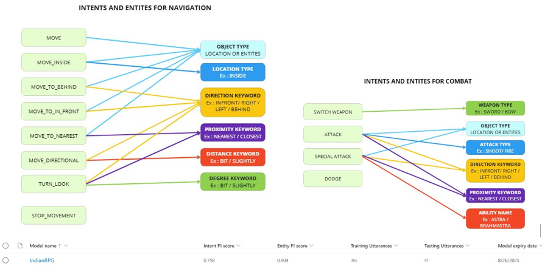
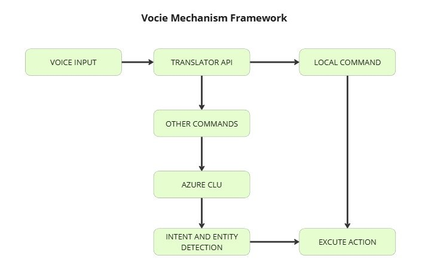

Abhimanyu - War Cry
- Introduction
Abhimanyu - War Cry is a single player, third person RPG that seamlessly blends the rich culture of Indian mythology. The game features a dual-input system, offering both traditional controls and real-time voice commands. This ensures the experience is not only engaging but also accessible to a diverse audience, including individuals with physical disabilities. Drawing inspiration from the Mahabharata, players step into the role of the legendary warrior Abhimanyu as he undertakes a heroic quest to defend the Fort of Matsya. Powered by Microsoft Azure’s advanced services, the game provides a multilingual, voice-controlled experience, allowing for smooth and responsive gameplay.
- Project Title: Enhancing Accessibility in Gaming: Development of a Dual Input PC Game with Traditional Controls and Voice Commands
- Role: Programmer / Designer / Art
- Platform: PC
- Technologies Used: Unity 3D C#, Azure Speech to Text, Azure Translator AI, Azure CLU ( NLP ), GitHub, Mixamo
Key Features


DEVELOPMENT PROCESS
The project followed an iterative Agile methodology, enabling flexibility and continuous improvement. Each game mechanic was first developed using traditional manual controls, after which voice-based functionality was integrated, ensuring robust and cohesive gameplay. The development process began with setting up Speech-to-Text functionality using Azure Cognitive Services over Open AI’s Whisper due to Azure’s low latency feature (0 - 0.5 Sec ) and Whisper lacked realtime processing. Azure CLU proved to be easier to integrate, with a simpler setup and efficient training process. Initial efforts focused on training a single intent model for navigation, utilising one intent (“move”) and multiple entities for locations and characters. This approach yielded poor results, as the model struggled with accuracy.
Utterances were categorised into different intents, leading to improved performance. While categorisation reduced errors, there were still occasional mispredictions caused by similar utterances.

Azure Translator API was subsequently integrated, enabling multilingual support and allowing players to issue commands in their preferred language. After navigation and language functionality were established, the combat systems were implemented.
